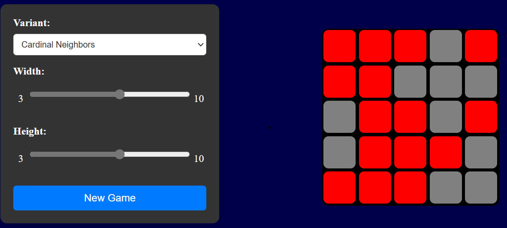

Light Puzzle Game
Welcome to the Light Puzzle Game. The objective of this puzzle game is to turn off all the lights on a grid. Each tile on the grid represents a light that can be either on or off. The challenge is to strategically flip the lights to achieve a board where all lights are off.
Go to Website
How It Was Built
This Light Puzzle Game was created using a combination of TypeScript, HTML, and CSS. The game board is constructed with HTML and styled using CSS to provide an engaging visual experience. TypeScript is used to handle the game logic, including the mechanics of flipping the lights and checking for win conditions. The game utilizes object-oriented programming principles to manage the state of the game board and interact with the user.
Core Functionalities
- Grid-Based Board: The game features a grid where each tile represents a light that can be toggled on or off.
- Tile Interaction: Clicking on a tile will flip its state and potentially affect adjacent tiles, based on game rules.
- Win Condition: The objective is to strategically flip the lights to turn off all the lights on the board.
- Game State Management: The game state is managed using TypeScript classes and objects to handle the grid and game logic.
Design Approach
The design of the Light Puzzle Game focuses on creating an intuitive and engaging user experience. The grid layout is visually appealing and responsive. The use of TypeScript allows for clear and maintainable code, with object-oriented principles ensuring that game logic and state management are handled efficiently.
Challenges Faced
- Implementing the game mechanics to ensure that clicking on a tile correctly affects the state of adjacent tiles.
- Designing a responsive and visually appealing grid layout that works well across different devices.
- Managing game state and logic efficiently using object-oriented programming principles in TypeScript.